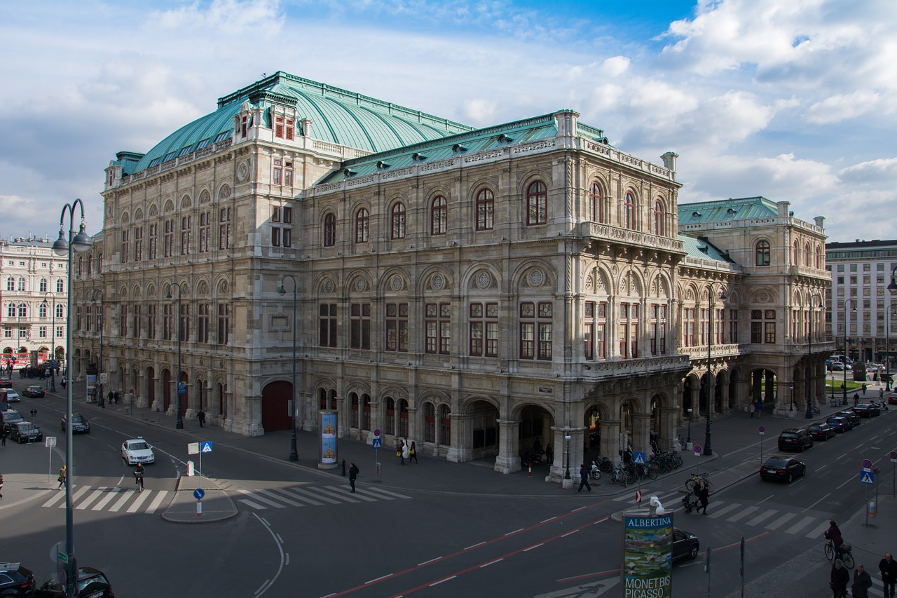

Opera Wiedeńska
Jedna z najsłynniejszych oper na świecie, otwarta w 1869 roku. Budynek w stylu neorenesansowym jest centrum wiedeńskiej sceny muzycznej, słynącej z wysokiego poziomu artystycznego. Co roku odbywa się tu prestiżowy Bal w Operze.

poprzednie zdjęcie